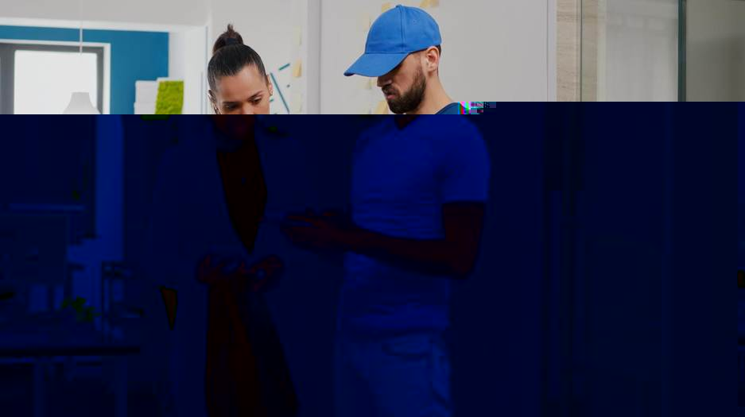

01 · KR
슈퍼브에이아이 × LH
비정형 사진을 현장 업무의 공통 분류 체계로 바꾸다
슈퍼브에이아이는 LH의 하자 사진 자동분류 1차 사업을 완료했다고 밝혔다. VLM 한 모델이 사진 한 장에서 공간·부위자재·하자유형·공종·공사유형 5개 항목을 동시에 분류하며, 1만 8천여 가지 조합과 월 약 30만 장 규모를 처리하는 구조다.
원문 보기 ↗ADDIT INSIGHT
AI 도입의 첫 성과는 답변 생성보다 현장 데이터를 일관된 업무 언어로 바꾸는 데서 나온다.